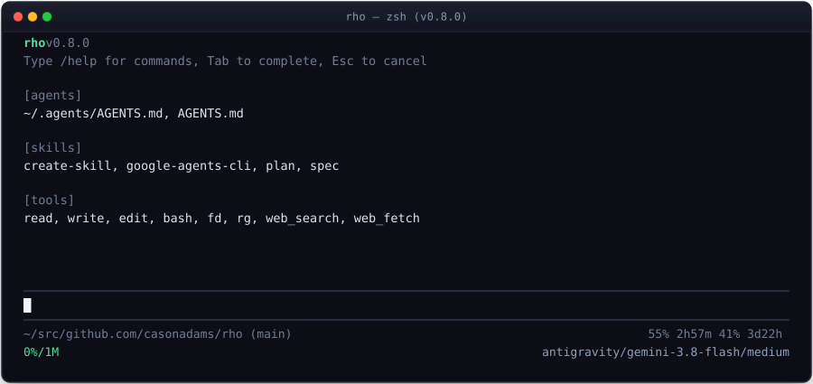
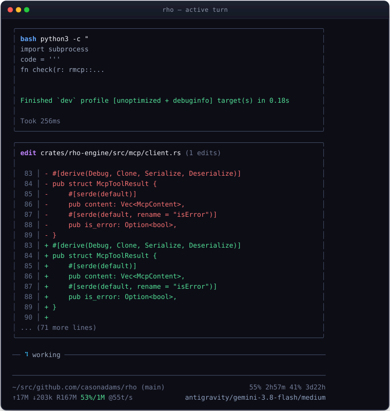
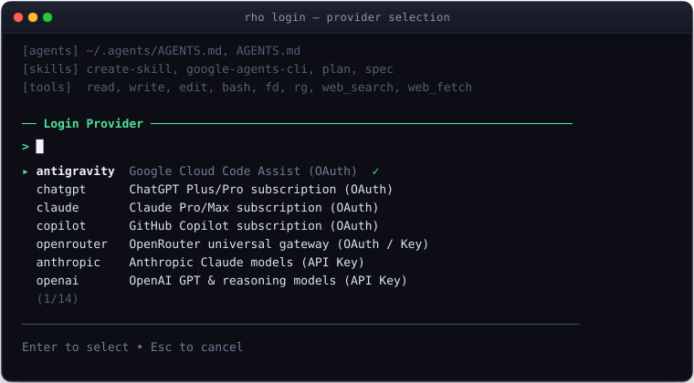
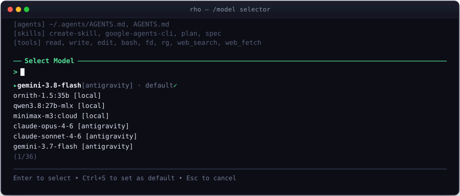
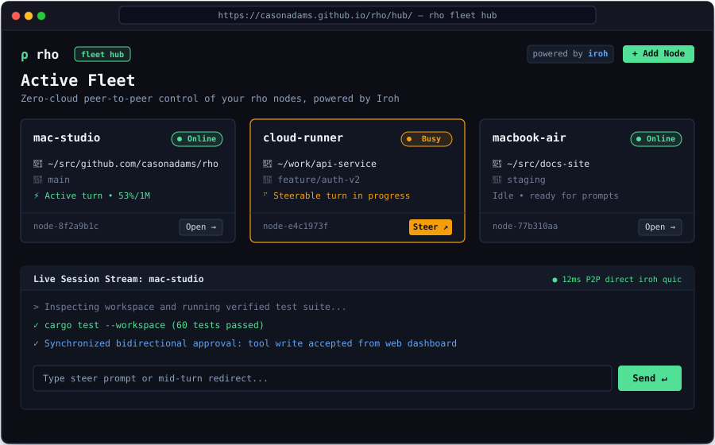

Getting Started with rho
rho is a fast, clean, local, private, and secure coding agent CLI built in Rust. It delivers native performance, strict in-process safety boundaries, session persistence, standard MCP tool servers, and lightweight lifecycle hooks.

The pirho Connection: For those who play with fire
In Greek, combining π (pi) and ρ (rho) spells πυρ (pyr) — fire.
rho was built with deep appreciation for the minimalist terminal ergonomics of pi.dev,
forging that same clean spirit into bare-metal Rust. Together, π + ρ makes pirho: designed for developers who love playing with fire, moving at blazing native speed, and keeping zero runtime bloat between them and their code.
- Aligned ergonomics: Identical thinking levels, slash commands (
/thinking,/skill:<name>,/new), and positional prompts. - Native Rust speed: Compiled binary with instant startup, zero node/python runtime prerequisites, and in-process tools.
- Safe fire handling: Fail-closed lifecycle hooks, process group isolation, and direct provider connections.
Installation
cargo install rhobrew install casonadams/tap/rhogh release download -R casonadams/rhoCLI Commands & Options
rho provides a focused set of subcommands and flags for agent execution, MCP tool management, and configuration:
# Start interactive multiline REPL
rho
# Execute a one-shot prompt
rho -p "Find and fix memory leaks in parser"
# Continue the last session in the current directory
rho -c
# Interactively browse and select from previous sessions to resume
rho -r
# Start a headless remote agent daemon over Iroh P2P and WebSocket
rho serve --workspace ~/src/backend-api
# Resume a specific session by ID (including budget checkpoint)
rho --resume <SESSION_ID>
# Export session to HTML or Markdown
rho --export session.html
# Authenticate an AI provider (OAuth subscription or API key verification)
rho login claude
rho login chatgpt
rho logout anthropic
# List live provider models and context windows
rho models
# Inspect or edit configuration
rho config
rho config model.provider anthropic
# Model Context Protocol (MCP)
rho mcp list
rho mcp test filesystem
rho mcp add db "https://mcp.db.example.com/mcp"
rho mcp remove db
# Self-update to latest release
rho update
8 Built-in Native Tools
rho includes 8 fast, native tools designed specifically for coding agents:
read: Safe file inspection with line numbers, chunk offsets, limit bounds, and image sniffing.write: Creates or overwrites files with automatic missing directory creation.edit: Targeted, exact text replacements verifying strict single-match semantics.bash: Process group cleanup, timeout watchdog, and binary output sanitization.fd: Fast gitignore-aware workspace file discovery with smart-case regex matching.rg: Content search, gitignore-aware, skipping binaries and bounding output lines.web_search: Live web searching with domain filters and structured summaries.web_fetch: Clean extraction of markdown, plain text, HTML, CSV, or feeds from URLs.
Providers, Authentication & Rolling Quotas
rho supports both API keys and subscription OAuth. Run rho login <provider> to authenticate:
- Subscription OAuth:
chatgpt,copilot,antigravity,claude,openrouter. - API Key Providers:
anthropic,openai,deepseek,gemini,groq,xai,mistral,cohere,ollama-cloud. - Local Models:
local(runs Ollama locally viaOLLAMA_HOST). - Live Rolling Quotas: Interactive footer displays 5-hour and weekly remaining cooldowns for Antigravity and ChatGPT (e.g.
95% 4h23m 89% 3d21h) and monthly quota for Ollama Cloud.

Configure defaults globally in ~/.config/rho/config.toml or per-project in .rho/config.toml:
# Default provider, model, and thinking level
provider = "anthropic"
model = "claude-3-7-sonnet-latest"
thinking_level = "high"
# Execution limits & context window
max_turns = 1000
context_window_messages = 24
compaction_max_bytes = 8192
# Local embeddings & passive RAG code retrieval (off by default)
semantic_search = false # or [features] semantic_search = false
# Custom OpenAI-compatible endpoints
[providers.my-local-endpoint]
base_url = "http://127.0.0.1:8000/v1"
key_env = "LOCAL_API_KEY"
# UI block framing, output toggles, and border colors (persisted automatically via /settings)
[ui]
block_style = "border" # "border" (outline, default) or "solid" (fill)
agent_block_output = false # Box assistant responses in bordered frames
hide_thinking = false # Hide thinking transcript blocks by default
tools_expanded = false # Expand tool output cards by default
cursor = "software" # "software" (default, flicker-free block) or "hardware" (native)
user_border = "blue" # User prompt blocks
agent_border = "gray" # Agent / sub-agent blocks
tool_border = "gray" # Tool / command cards
bash_success_border = "gray" # Successful bash commands
bash_error_border = "red" # Failed bash commandsSafety Guardrails & Modal Controls
rho isolates mutating operations (file writes, edits, shell commands) behind an interactive modal:
- [y] Allow: Authorize this specific operation.
- [e] Edit: Inspect and adjust command arguments interactively before execution.
- [a] Always: Authorize this command or pattern for the remainder of the session.
- [n] Deny: Reject execution and return helpful feedback to the model.
Use rho --no-permission to bypass permission modals for headless non-interactive CI environments.
Privacy & Zero Telemetry
rho collects nothing. There is zero telemetry, zero background tracking, zero analytics, and zero phone-home pings built into the binary.
- Zero Telemetry & Analytics: rho does not include any telemetry frameworks, crash reporters (such as Sentry), tracking pixels, or usage analytics. It never records, collects, or transmits your command history, tool invocations, prompts, or error traces to rho developers or third parties.
- Direct Provider Communication: Network requests are made strictly and directly to the model endpoints you configure (e.g. Anthropic, OpenAI, Google Gemini, local Ollama, or custom OpenAI-compatible endpoints). There are no intermediary proxy servers, hosted cloud backends, or data collection relays.
- Local-Only Storage: Your configuration files, API keys, session transcripts, branch trees, and context caches are stored strictly on your local disk in standard user config and data directories (
~/.config/rho,~/.local/share/rho, and local workspace.rho/). - Explicit Tool Networking: Network access by tools is bounded and explicit—only when you or the agent run web tools (
web_search,web_fetch) or bash commands that perform network requests. Mutating and network-accessing tools can be audited and gated via Safety Guardrails. - Open Source & Auditable: The entire rho codebase is open source under MIT / Apache-2.0. You can inspect the source code and dependencies to verify that no tracking or telemetry code exists.
Keyboard Shortcuts & Commands
| Shortcut | Context | Action |
|---|---|---|
| Escape | Any | Cancel running turn, abort active tool execution, or dismiss modal popup |
| Ctrl+C | Editor / Modal | Clear draft input or search query (never interrupts turns or exits) |
| Ctrl+D | Editor | Exit session when editor is empty |
| Ctrl+L | Editor | Open interactive provider and model selector modal (fuzzy search) |
| Shift+Tab | Editor | Cycle thinking effort (off → minimal → low → medium → high → xhigh → max) |
| Ctrl+O | Editor | Open interactive session turn history DAG tree viewer |
| Ctrl+S | Selector Modals | Save currently selected model or thinking level as default |
| Enter | Agent running | Queue immediate steering message to execute after active tool |
| Alt+Enter | Any | Enqueue follow-up prompt to FIFO message queue (or newline) |
Slash Commands
Instant in-session commands typed directly into the multiline editor:
| Command | Description |
|---|---|
/help |
Open interactive command reference and shortcut modal |
/model |
Open interactive model and provider switcher modal (Ctrl+L) |
/settings |
Open interactive runtime settings modal (block style, framing, thinking, semantic search) |
/mcp |
Open the interactive Model Context Protocol modal and toggle external tool servers |
/compact |
Manually trigger context compaction with an optional focus directive (e.g. /compact "focus on tests") |
/remote |
Open the Iroh P2P peer pairing modal to steer and monitor from mobile/web hub |
/tokens |
Display live context window usage, turn counts, and token telemetry |
/tree |
View session turn DAG tree and branch navigation (Ctrl+O) |
/reload |
Reload configuration, skills, and MCP tools without losing conversation history |
/new |
Clear conversation and start a fresh session in the current directory |
/exit |
Exit the interactive session cleanly (Ctrl+D) |

Headless & IDE RPC Server Mode
For editor extensions (VS Code, Neovim, Zed) and headless automation harnesses, rho provides a fully concurrent, non-blocking JSON-lines RPC server over standard I/O:
rho --mode rpcUnlike synchronous wrappers, rho's RPC loop processes client commands concurrently while turns run. Clients can abort running tasks, steer execution at tool seams, resolve interactive permission prompts, and navigate conversation tree DAGs without blocking stdout.
RPC Commands Reference
| Command | Parameters | Description |
|---|---|---|
prompt |
{ "message": "..." } |
Start an agent turn asynchronously. Emits streaming text, reasoning chunks, and tool events. |
steer |
{ "message": "..." } |
Inject a steering prompt delivered immediately after the active tool finishes. |
abort |
{} |
Interrupt active model generation or abort executing tool processes immediately. |
tool_response |
{ "approval_id": "...", "decision": "allow" | "deny" | "edit: <cmd>" | "always" } |
Resolve a pending permission prompt emitted by tool_approval_request. |
get_state |
{} |
Query active session ID, model, provider, thinking level, and status (idle, busy, waiting_approval). |
get_tree |
{} |
Retrieve the complete conversation history DAG, checkpoints, active leaf ID, and entry previews. |
switch_branch |
{ "node_id": "..." } |
Rewind or branch the conversation DAG to a previous turn or checkpoint. |
set_node_label |
{ "node_id": "...", "label": "..." } |
Assign or clear a human-readable bookmark label on a tree node. |
list_sessions |
{} |
Enumerate saved session files, turn counts, last modified timestamps, and titles. |
resume_session |
{ "session_id": "..." } |
Switch the active engine to another saved session ID. |
fork_session |
{ "node_id": "..." } |
Fork the active branch or checkpoint into an isolated new session file. |
set_model |
{ "model": "...", "provider": "..." } |
Hot-swap the active inference model or provider at runtime. |
set_thinking |
{ "level": "off" | "minimal" | "low" | "medium" | "high" | "xhigh" | "max" } |
Dynamically adjust reasoning effort for supported reasoning models. |
compact |
{ "instructions": "..." } |
Trigger manual context compaction, optionally passing custom focus instructions. |
exit |
{} |
Cleanly terminate active tasks and shut down the daemon. |
Interactive Tool Approval Flow
When a tool executes a mutating command requiring user consent, rho emits a tool_approval_request event and transitions to status: "waiting_approval":
{"type":"tool_approval_request","approval_id":"appr-b618","tool":"bash","arguments":{"command":"cargo check"},"description":"Run cargo check"}
{"type":"status_changed","status":"waiting_approval"}
The client displays a native UI modal and responds with tool_response:
{"type":"tool_response","approval_id":"appr-b618","decision":"allow"}Fleet Hub & P2P Remote Control
rho features zero-cloud peer-to-peer remote access powered by Iroh. You can run headless agent daemons across multiple machines, or pair an active interactive terminal session to steer and monitor from any mobile device, tablet, or web browser:
1. Run a Headless Node (rho serve)
Start a background agent daemon in any project repository:
# Serve the current directory over Iroh P2P and WebSocket
rho serve
# Or specify a workspace directory, custom port, and friendly label
rho serve --workspace ~/src/backend-api --port 50051 --name "work-laptop"
The node generates an end-to-end encrypted ticket (rho_...), a pairing URL, and an in-terminal QR code for instant mobile camera pairing.
2. In-Session Terminal Sharing (/remote)
While working in an active interactive TUI session, type /remote to display the pairing modal. The horizontal top divider above the prompt editor reflects remote state:
── remote ─────────────────────────: Remote listening active, 0 peers connected.── remote (1) ─────────────────────: Connected to a web dashboard peer.── ⠋ working • remote (1) ──────────: Live turn executing with remote mirror active.
3. Bidirectional Sync & Steering
The Web Hub (www/hub/) runs 100% in the browser using WebAssembly. Key capabilities:
- Live Prompt Mirroring: Prompts typed in either the terminal or the web dashboard appear on both screens instantly.
- Active Steering: When the agent is busy, the web prompt button morphs into Steer ↗, injecting redirection instructions into the running agent at tool boundaries.
- Synchronized Permission Approvals: When tools request execution approval, cards appear on both the TUI modal and the web UI. Approving or denying on either screen immediately unblocks execution.
- Session DAG Navigation: Browse past turns, switch branches, or create new sessions from the sidebar.

Dynamic Context Compaction & Token Budgeting
Long-running coding sessions inevitably encounter context window exhaustion. rho incorporates an adaptive, resilient compaction engine designed to preserve critical repository findings while reclaiming token capacity:
- Adaptive Context Threshold: Auto-compaction monitors token pressure against the active model's real context window, automatically scaling reserve budgets across both small local models (8k–32k) and massive cloud windows (200k–1M+).
- Atomic Split-Turn Preservation: Cut points never bisect tool calls from their corresponding tool results, preserving protocol validity for Anthropic and OpenAI schemas.
- Cumulative File Tracking: Across multiple compactions, rho records all modified and inspected workspace files in a durable
<file-operations>XML ledger so file awareness is never lost. - Resilient Deterministic Fallback: If upstream provider network timeouts or rate limits interrupt an LLM summarization call, rho automatically falls back to an offline deterministic fact extractor that constructs a structured summary node without dropping session state.
- Bounded Summary Enforcement: Compaction summaries are strictly clamped to
compaction_max_bytes(default 8,192 bytes), preventing runaway summarizer recursion.
The rho Lifecycle Hooks Subsystem
Lifecycle hooks in rho are lightweight, one-shot executable scripts in .rho/hooks/. When events occur, rho pipes event details as single-line JSON to the script's stdin and reads the decision JSON from stdout.
Hook Events
| Event File | Payload (stdin) | Description |
|---|---|---|
on_tool_call |
{ event, tool_name, args, turn, session_id } |
Intercept tool calls before execution. Can allow, stop, skip, rewrite arguments, or prompt the user. |
on_tool_result |
{ event, tool_name, args, output, is_error } |
Inspect or transform tool output after execution. |
on_invalid_tool_call |
{ event, tool_name, args, available_tools } |
Intercept hallucinated or misspelled tools to retry or halt. |
on_completion_call |
{ event, turn, prompt } |
Audit prompt before LLM provider completion. |
turn_start |
{ event, prompt, turn, session_id } |
Notifies turn initiation with initial user prompt. |
turn_end |
{ event, status, tool_calls_count, turn, session_id } |
Notifies turn completion. |
Example: Blocking Destructive Commands
#!/bin/sh
read -r EVENT
# Intercept dangerous commands
if echo "$EVENT" | grep -Eq 'rm -rf|git reset --hard'; then
echo '{"action":"stop","reason":"Destructive command blocked by hook"}'
fiConfiguring Model Context Protocol (MCP) Servers
MCP servers are tool providers configured via standard JSON in ~/.agents/mcp.json (global) or .mcp.json (local workspace root). rho supports both local stdio child processes and remote streamable-http (with OAuth 2.1 authentication and SSE streaming). All exposed tools are automatically namespaced:
# Inspect, test, and manage MCP servers
rho mcp list
rho mcp test filesystem
rho mcp login remote-jira
rho mcp add db "https://mcp.db.example.com/mcp"
# In the interactive REPL:
/mcp{
"mcpServers": {
"filesystem": {
"command": "npx",
"args": ["-y", "@modelcontextprotocol/server-filesystem", "/Users/username/Desktop"]
},
"github": {
"command": "npx",
"args": ["-y", "@modelcontextprotocol/server-github"],
"env": { "GITHUB_TOKEN": "${GITHUB_TOKEN}" }
}
}
}
When configured MCP servers expose more tools than the deferral threshold (defer_threshold, default 10), rho automatically defers tool schemas behind tool_search to minimize prompt token overhead. The model searches on-demand and dynamically activates matching tools with full schemas for subsequent turns.